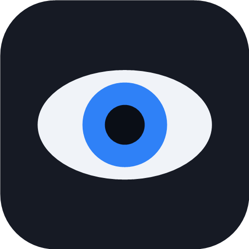
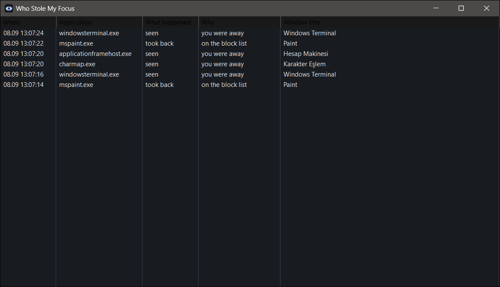
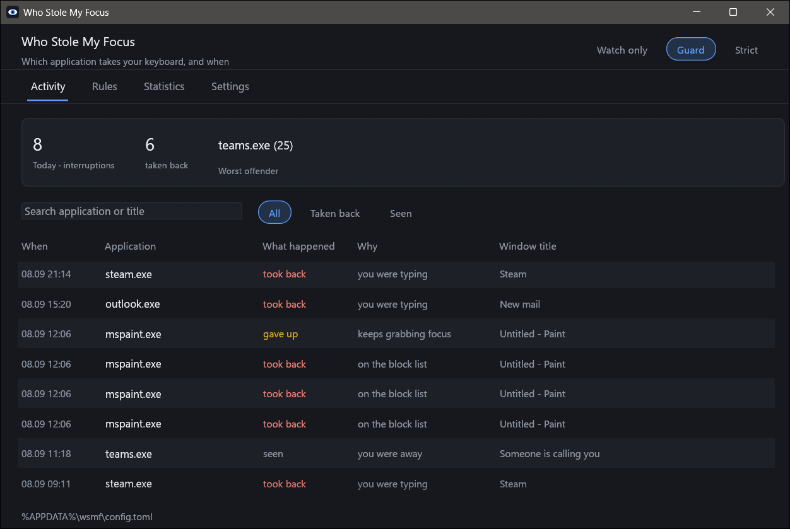
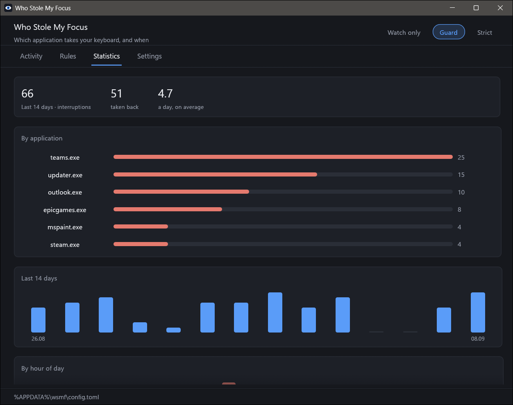
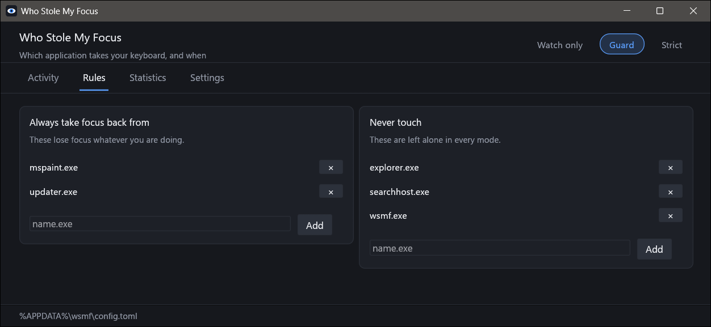

Watch only
The default. Never touches your windows. Records every application that took your focus, when, and what its window was called. Start here.

wsmfWindows 10 · 11 / tray program / Rust / MIT
You are typing. A window you did not ask for jumps in front and eats the next few keystrokes. This tray program tells you which application did that, and, if you want, stops it from doing it again.
01 — Try it
02 — Why this exists
200 000→0
HKCU\Control Panel\Desktop\ForegroundLockTimeout
Windows already has a defence. The foreground lock timeout stops background applications from calling SetForegroundWindow at will. Plenty of installers quietly set it to 0, and after that anything can interrupt anything.
The fix has been asked for in Microsoft’s own PowerToys repository since 2019. The registry key has no interface. The one tool most people find is abandoned or flagged by Defender.
03 — Three modes, from the tray or the panel
The default. Never touches your windows. Records every application that took your focus, when, and what its window was called. Start here.
Hands focus back if it was taken while you were typing, and always from applications on your block list.
Hands focus back from everything that is not on your allow list.
When it takes focus back it flashes the interrupting window in the taskbar, the way Windows does when it blocks one itself. Nothing is lost. It just waits.
04 — How it decides
A window coming to the front is usually you, clicking or pressing Alt+Tab. Getting that wrong is worse than the original problem.
400 msAn application opening puts up two or three windows in a few milliseconds. The first is answered, the rest are ignored, so a launch does not turn into a flicker.
3 / 10 sIf an application keeps grabbing focus, it wins after three tries in ten seconds. Two programs fighting over the foreground is worse than one badly behaved program.
✓ testEvery row above is a unit test. Turn on record_everything and the log tells you which row a decision matched.
05 — Two windows




06 — What it does not do
07 — Install
It appears in the tray. Tick “start with Windows” in the tray menu if you want it there for good. To remove it: quit, delete the exe, and delete %APPDATA%\wsmf if you want the log and settings gone too.
scoop
scoop bucket add tlk https://github.com/Talkdedsec/scoop-tlk
scoop install tlk/wsmfor download
Reading foreground changes and moving focus is also what some malware does, so a heuristic scanner may take an interest. Releases are built by GitHub Actions from the tag, and the whole program is about 4 800 lines of Rust you can read.